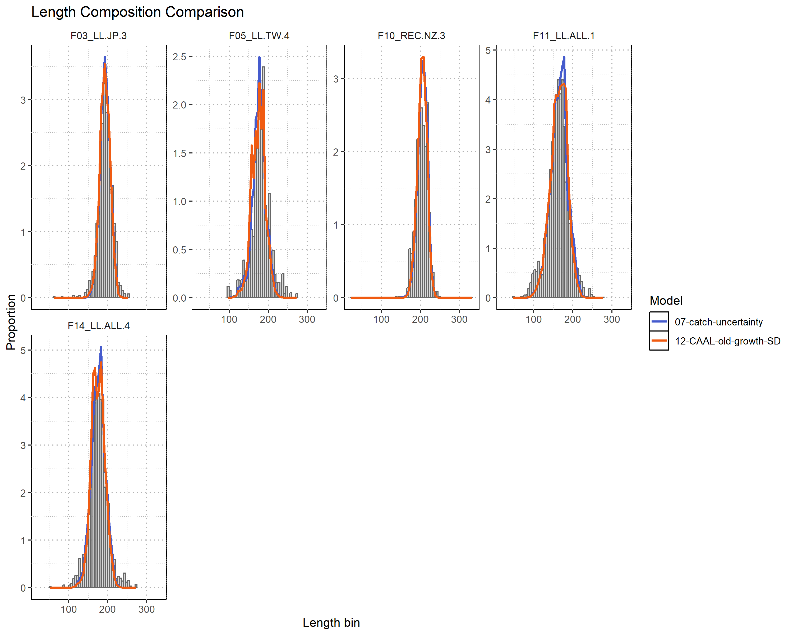

Summary report from the NOAA-SPC assessment model meeting on SWPO striped marlin
1 Executive summary
This report presents outcomes from a joint Pacific Community (SPC) and NOAA Fisheries stock assessment modeling meeting held in Honolulu, Hawai’i from 20-24 January 2025. The meeting focused on addressing technical recommendations made by WCPFC SC20 concerning the 2024 Southwest Pacific Ocean (SWPO) striped marlin stock assessment.
Key issues identified by SC20 included: (1) poor fits to both size composition data and the relative abundance index, particularly in the last decade; (2) conflicts between the relative abundance index and size composition data; (3) inconsistencies in fits to length and weight composition data from the same fishery; (4) selectivity curve definition issues; and (5) inability to estimate model initial conditions.
The primary achievement of the meeting was transitioning the assessment model from MULTIFAN-CL to Stock Synthesis, which provided considerable advantages in resolving several key technical issues. This transition allowed for modeling selectivity as a function of length while maintaining annual population dynamics, which better aligns with the reproductive biology of striped marlin.
Through sequential model development and testing, several improvements were achieved:
Improved initial conditions estimation: Returning to a 1952 start year with an unfished state better addressed population initialization concerns.
Enhanced selectivity modeling: Length-based selectivity provides greater resolution.
Refined data inclusion: Selective exclusion of problematic size composition data improved model fit to remaining data components.
Improved growth modeling: Internal estimation of growth parameters using conditional age-at-length data helped address potential limitations from the externally derived growth curve.
Accounting for historical catch uncertainty: Implementation of catch uncertainty for early high-catch periods reduced sensitivity to potentially unreliable historical catch records.
Several tricky data and modeling challenges remain. These include: (1) spatiotemporal heterogeneity in fleet coverage limiting the reliability of abundance indices; (2) potential non-representativeness in mixed-fleet composition data; (3) limitations in the age data from opportunistic sampling; and (4) data weighting complexities arising from evident conflicts between data sources.
Recommendations for the final 2025 assessment include:
- Continue development in the Stock Synthesis framework
- Begin the model from 1952 assuming unfished initial conditions
- Develop multiple alternative abundance indices to evaluate sensitivity to different data sources
- Exclude problematic size composition data
- Consider ensemble modeling approaches to better characterize uncertainty
- Explore two-sex model development
These developments help address SC20’s technical concerns and provide a framework for finalizing the 2025 SWPO striped marlin assessment.
2 Introduction
This report describes the outcomes and recommendations from a joint Pacific Community (SPC) and NOAA Fisheries stock assessment modeling meeting held in Honolulu, Hawai’i from 20 - 24 January 2025. Meeting activities focused on addressing technical recommendations made by SC20 (WCPFC, 2024) on the 2024 stock assessment (Castillo-Jordan et al., 2024). For context, the 2024 stock assessment (Castillo-Jordan et al., 2024) model, , is an age-structured population dynamics model implemented in MULTIFAN-CL (Fournier et al., 1998) that assumes a single, well-mixed population and approximates spatial structure using a fleets-as-areas approach. Major changes from the 2019 the stock assessment (Ducharme-Barth et al., 2019) model, , include moving from a catch-errors to a catch-conditioned treatment of fishing mortality, and updating key biological assumptions (e.g., growth).
The SC20 identified the following technical issues needing further attention and requested that these issues be addressed prior to presenting the 2025 stock assessment to SC21:
- lack of fit to either the size composition data or the relative abundance index (particularly in the last decade),
- conflict between the relative abundance index and the size composition data,
- inconsistencies in the fit to length and weight composition data from the same fishery,
- how selectivity curves are defined and,
- lack of ability to estimate model initial conditions.
It is in this context that the United States offered to host SPC staff for a modeling meeting and to provide technical assistance in the redevelopment of the stock assessment (WCPFC, 2024). The meeting was held in person at the University of Hawai’i - Manoa campus with one participant from SPC and four participants from the NOAA Fisheries Pacific Islands Fisheries Science Center (PIFSC). The attendees are listed in the Appendix.
3 Model explorations
3.1 Pre-meeting
Following SC20 and prior to the modeling meeting, SPC continued development on the stock assessment model to try and improve the fit to the size composition data. These additional investigations focused on how selectivity was defined in the model. In the 2024 stock assessment (Castillo-Jordan et al., 2024), cubic-splines were used to define flexible selectivity curves as a function of age noting that implementation in restricts placement of nodes to age class values. Since the 2024 assessment assumed 10 annual age classes this placed a severe constraint on the shape of the selectivity curve (Figure 1), particularly at the youngest ages when growth was assumed to be quite rapid. A new model (Figure 2) was reparametrized in using quarterly age in order to provide greater resolution in age-specific selectivity at the youngest sizes (Figure 3). The new quarterly age model also included a separate index for each of the four quarters which shared a stationary catchability, and selectivity curve. Additionally, time-varying observation error for each index was not activated and instead assumed a \(\sigma = 0.17\).
While this new model had the desired effect of improving the resolution of selectivity and fits to size composition data, it introduced a new problem into the population dynamics. are not known to spawn year-round like tropical tunas, but rather have a restricted spawning season in the late austral spring and early austral summer where they form multiple discrete spawning aggregations (Kopf et al., 2012). However, in it is difficult to restrict recruitment in a quarterly model to occur in a single quarter of the calendar year. An orthogonal polynomial parametrization for recruitment was applied to restrict recruitment to the first quarter of the calendar year (following spawning in the early austral summer), however the model still introduced recruits into the model in all quarters of the year (Figure 4).
3.2 January 2025 meeting
Model investigations during the January 2025 stock assessment modeling meeting used the model provided by SPC as a starting point. A table of key model convergence and fit metrics is provided in Table 1.
3.2.1 Transition to Stock Synthesis
Discussions in the lead up to the January 2025 meeting identified that switching the modeling framework from to Stock Synthesis (Methot & Wetzel, 2013) could help resolve some of the issues identified by SC20 that the model sought to address without compromising key population dynamics assumptions (e.g., annual population dynamics and recruitment). One of the key benefits to is that it can model selectivity as a function of length and/or age. This improves the resolution of the selectivity curve and fit to the size data while maintaining annual population dynamics.
An initial model was configured to approximate the available model. implements a single-sex model spanning 1979-2023 with annual age-structure and quarterly population and fishing dynamics. An early recruitment period from 1969-1978 was used to set-up the initial population age structure, and the initial level of fishing mortality (1) was fixed to match the . Fishery definitions and selectivity groupings were maintained with selectivity defined as a function of length assuming a double-normal functional form. All length and weight2 composition were reformatted using the bin structure. To initialize the model, the input effective sample sizes for the weight and length composition matched the sum of the input observations from the for each quarterly fishing instance. Rather than use the four quarterly indices, a single quarterly index corresponding to quarter 4 was used in the Stock Synthesis model. Quarter 4 was selected as this was the one most likely to represent changes in the spawning component of the population given the temporal reproductive dynamics described by Kopf et al. (2012). The time-varying observation error specified, but not used, in the model were applied in this case.
Biological parameters were converted from the model. Growth followed a von Bertalanffy function characterized by explicit parameter values: \(L_1\) = 88.38 cm at age 0.25 years, \(L_2\) = 210.96 cm at age 10 years, and \(k\) = 0.84, with CV structure following a length-at-age pattern. Reproduction dynamics incorporated a Beverton-Holt stock-recruitment relationship with steepness fixed at 0.8 and recruitment variance (\(\sigma_R\)) set to 0.2, while the maturity ogive was logistically parameterized with length at 50% maturity at 181.21 cm and a slope parameter of -0.20.
Initial results from the (or ) models did not show particularly close agreement with the temporal dynamics or spawning biomass scale, however estimates of population numbers were more comparable (Figure 5). However, this model was not expected to show good agreement as it assumed naïve sample sizes for the size composition data and the difference in treatment of observation error for the index. Most importantly, the model ran and could form the basis for further refinements to model structure in order to improve the fit to various data components.
3.2.2 Early refinements
Following the successful run of the model, a pair of follow-on models were developed in a stepwise manner to address model fit and statistical treatment of data inputs. These modifications resulted in the and model configurations.
The modifications focused on improving model performance while preserving the fundamental assumptions of the baseline model. Selectivity parameterization was modified through three key adjustments: (1) converting fixed end logit parameters to estimated parameters for fleets using double-normal selectivity; (2) fixing top logit parameters enforce dome-shaped selection where empirically supported; and (3) replacing the New Zealand recreational fishery’s double-normal selectivity with a simpler logistic function. These changes provided greater flexibility in fitting length composition data while maintaining biologically plausible selection patterns. Statistical treatment of composition data was refined by increasing the minimum tail compression value to 1e-02 and implementing fleet-specific effective sample size adjustments (down-weighting factors of 0.03-0.10) to match the level of down-weighting seen in the model. Additionally, the CPUE index error structure was augmented with an observation error component (0.191) derived from loess smoother residual analysis. These modifications collectively addressed potential over-dispersion in composition data and explicitly accounted for potential un-modeled observation error in the standardized index.
Following the implementation of the model, further adjustments focusing specifically on selectivity were explored in the model. For Fishery 2 (Japanese longline in sub-region 2), Fishery 9 (Australian recreational), Fishery 12 (aggregated longline in sub-region 2), and the standardized abundance index (Fleet 15), the top logit parameters were changed from fixed values to estimated parameters. Concurrently, for these same fleets, the end logit parameters were reverted from estimated parameters to fixed values (-999) to maintain parameter identifiability. This adjustment effectively allowed the peak of the selectivity curve to be estimated while allowing its right-hand tail behavior to decline gradually.
Modifiying selectivity modeling and size composition data weighting in the model improved the fit to the index (Figure 6) and resulted in somewhat more reasonable selectivity curves. However, issues remained, noticeably for Fleets 2 (Japanese LL; sub-region 2) and 15 (Index). Further tweaking the selectivity in model degraded the fit to the index slightly but resolved some of the existing selectivity issues and generally improved fit to length (Figure 8) and weight (Figure 9) data.
3.2.3 Reverting model start year to 1952
One of the issues raised at SC20 was the lack of ability of the model to estimate initial conditions in 1979, rather than begin the model at an unfished equilibrium in 1952 as was done in the model. Initial conditions in 1979 in the model were tuned (assuming initial total mortality \(Z\) to be \(1.7 \times M\), natural mortality) to match the level of depletion (\(\sim 0.35\)) seen in 1979 from the model. Rationale given for changing the start year to 1979 in the model was to include vessel random effect in the standardized index, and to avoid the issue of implausibly high estimated recruitments in the early years that arose after switching to the updated growth curve.
Following the switch to , a new model beginning in 1952 was developed from the model to address the initial conditions issue raised with the model, and to see if the alternative selectivity formulation as length-based alleviated the issue of implausibly high estimated recruitments in the early years. The extended model incorporates historical catch data from 1952-1978 extracted from the model. The only size composition data that was included was the New Zealand recreational (Fleet 10) weight composition data. Given that this fishery assumed a logistic selectivity shape, observed declines in average weight could provide information about adult abundance trend and total mortality \(Z\) during the years prior to the start of the standardized index. Treatment of the initial condition (e.g., no longer including steepness effects in the initial equilibrium calculations and removal of parameter) was also changed to accommodate starting at an unfished condition. Lastly, the recruitment dynamics were reconfigured to accommodate the longer time series. Specifically, the recruitment deviation framework was expanded to span 1952-2021 (recruitment in the last year of the model was not estimated), with early recruitment deviations beginning in 1942 and bias adjustment parameters recalibrated for the extended time series.
Switching back to a 1952 start from an unfished condition in the model resulted in dynamics that were much similar to the model (Figure 10), especially in terms of more recent estimates of spawning biomass scale and depletion. The change in how recruitment is modeled between and with the use of the early recruitment period and recruitment bias-adjustment ramp eliminates the large spike in recruitment seen in the model and overall recruitment variability in the is moderated relative to the two models. Changing to the model did degrade fit to the index in later years (Figure 11).
3.2.4 Excluding size composition data
The next phase of developments considered the effect of removing size composition data from the model that were believed to be unsuitable for use in the model for either data quality, or sampling concerns. Prior to the meeting start, the SPC spent considerable time reviewing the size composition data for each fishery and provided guidance (P. Hamer, pers. comm.) on which data should be excluded. Based on this information, two additional models and were sequentially developed from to remove un-representative data, minimize data conflicts, and improve the fit to the remaining data (index and size composition). Note that these exclusions were largely exploratory and does not necessarily reflect final decisions on the inclusion/exclusion of data for a proposed 2025 stock assessment model. The cumulative changes leading to the are described below.
Length composition changes
- Fleet 1 (JP LL; sub-region 1): Eliminated all length composition due to small sample sizes and temporal patchiness.
- Fleet 2 (JP LL; sub-region 2): Eliminated all length compositions due to conflict with corresponding weight data and temporal patchiness.
- Fleet 6 & 7 (AU LL): Excluded all length compositions due to internal conflict with corresponding weight composition data and temporal patchiness relative to more comprehensive weight data.
- Fleet 8 (NZ LL): Removed all length compositions based on inadequate sample sizes and temporal patchiness.
- Fleet 11 (Aggregate LL; sub-region 1): Targeted removal of 2006-2014 length composition data to exclude TWDW data which may have data quality issues.
- Fleet 12 (Aggregate LL; sub-region 2): Eliminated all length compositions. Mixed-flag fishery compositions are spatiotemporally patchy and may fail to representatively capture aggregate fishery dynamics despite potentially having adequate sampling of individual fleet components.
- Fleet 13 (Aggregate LL; sub-region 3): Same as for Fleet 12.
- Fleet 14 (Aggregate LL; sub-region 4): Removed pre-2006 data that demonstrated anomalously small size observations.
- Fleet 15 (Index): Complete removal of length composition due to conflict with weight composition data and evidence of less comprehensive temporal sampling compared to the weight data.
Weight composition changes
- Fleet 1 (JP longline; sub-region 1): Removed all weight composition data due to small sample sizes and temporal inconsistencies
- Fleet 2 (JP longline; sub-region 2): Specifically removed 1979 weight composition data due to apparent sampling anomalies
- Fleet 10 (NZ recreational): Excluded post-1988 weight composition due to management-induced changes in size selectivity (encouraging non-retention of small individuals) that may bias post-1988 samples
Selectivity changes
The selectivity grouping for Fleet 12 was shared with Fleet 2, given the removal of all composition data for Fleet 12 (see Table 2 for updated fishery definitions).
Fits to the index (Figure 12) as well as the remaining composition data (length: Figure 13 and weight: Figure 14) were predictably improved when un-representative and conflicting composition data were removed.
3.2.5 Catch uncertainty
One of the concerns raised during development of the model was the influence of large catch event by the Fleet 2 (Japanese LL; sub-region 2) in 1954. This was also a concern in the model, and sensitivity to the starting year was explored in that previous assessment to exclude that large catch observation (Ducharme-Barth et al., 2019). A different approach was taken in the current explorations, and the was developed to account for potential uncertainty in the historical catch.
The model built on the model and bifurcated Fleet 2 (Japanese LL; sub-region 2) into two temporal components. This created a distinct fleet (F15_LL.JP.2_early) for pre-1979 data while maintaining the original fleet for more recent observations. Selectivity was shared between the two fleets. However, moving to allowed some fleets (Fleets 1 - 14) to stay defined as catch-conditioned, where fishing mortality is calculated to fit the catch exactly, and have Fleet 15 estimate the fishing mortality (F) needed to fit to the catch with observation error. This structural modification also enabled differential parameterization of catch uncertainty, with higher standard errors (SE=0.2) assigned to quarters with higher catch observations (quarters 3-4) and lower uncertainty (SE=0.05) to quarters with lower catch observations (quarters 1-2). Additionally, the catch-conditioned F values for Fleet 15 were used as initial values in the estimation of F. The index fishery stayed the same but became Fleet 16. Parameterizing the model in this way allowed for potential uncertainty in historical catch to be propagated in model estimates in a computationally efficient manner.
Adding in catch uncertainty (Figure 15) did not greatly change time series estimates of key stock assessment outputs (Figure 16) though it did appear to improve fits to the index (Figure 17).
3.2.6 Treatment of growth
Using the as a baseline, a number of additional models were developed to explore alternative ways of dealing with growth. Growth was a major source of discussion as some of the issues identified in development of the model became more pronounced after switching to a new growth curve provided by Farley et al. (2021), with the new curve showing exceptionally rapid growth through the first year of life. This was flagged as a concern given the opportunistic nature of sampling for the otoliths from longline landed individuals which has reduced selectivity at smaller sizes and would only capture the most rapid growing individuals in the youngest age classes. In an effort to improve model fits and alleviate any potential mis-specification in the growth curve, two classes of models were developed.
Models and attempted to improve the fit by defining variability in growth using CV as a function of length at age, rather than as a standard deviation, and setting the CV for yound and old fish to be 0.15. In the model \(L_1\) was set to 59.9 cm and assumed an age at \(L_1\) of 0, while in the model \(L_1\) was set to 88.3822 cm and assumed an age at \(L_1\) of 0.25. These models ended up describing functionally identical growth curves, though it was initially unclear from the documentation that this would be the case.
Models , , , and all attempted to improve fit by estimating growth internally using the aging data from the Farley et al. (2021) study as conditional age-at-length data. Data were associated with the appropriate fleet definition based on sampling location and flag of vessel sampled from. Though the aging data recorded decimal age, age was entered in the model as the nearest model age less than or equal to the decimal age. Given that model ages were annual, this meant integer age values. For all models \(L_1\), \(L_2\) and \(k\) were freely estimated.
Models and both defined variability in growth using CV as a function of length at age in the same way as models and . Model included an aging error matrix with standard deviations of aging error standard deviation ranging from \(\sigma_{Age} = 0.35\) at age 0 to \(\sigma_{Age} = 2\) at age 10. This was done to account for both actual aging error and for converting from decimal age to integer age to match the model structure.
Models and both defined variability in growth using standard deviation as a function of length at age in the same way as model , where the standard deviations at the youngest and oldest model ages were \(\sim10\). Model included the same aging error matrix as while model did not.
Estimation of growth internally using conditionaly age-at-length data and size composition slowed growth (lower \(k\)) and increased \(L_2\) (Figure 18), which had a small effect on recent time-series estimates (Figure 19). It also improved fits to the index (Figure 20), length composition (Figure 21) and weight composition (Figure 22) overall though some fisheries noticeably deteriorated (e.g., the weight composition data). We note that although the variability in length at age between the formulations using CV vs. standard deviation were approximately the same, the models showed greater stability when variability in growth was defined using a standard deviation as a function of length at age.
3.2.7 Additional investigations
The model emerged from this process as a reasonable candidate from which a numer of additional investigations were attempted. These are briefly described below.
- : Built off to implement a targeted approach to historical catch uncertainty by specifically isolating Japanese longline catches from 1954-1978 with values greater than 1 into a separate fleet (Fleet 15) with elevated uncertainty (0.2), while maintaining lower uncertainty (0.01) for all other fleet 2 catches. This refinement built directly upon but applied a more focused treatment of uncertainty to historical catch. This had negligible impacts on estimated quantities.
- : Attempted to input the conditional age-at-length data as quarterly ages but this was unsuccessful.
- : This model modified to remove the index observation in 1998 to see if attempting to fit this high point was driving the misfit to the index seen in 2000 - 2002. Assessment results with that observation removed showed little meaningful difference with the model results indicating that it is not likely to be the source of the index misfit.
- : This model modified to keep the selectivity values for Fleet 6 (Australian LL; sub-region 2) fixed at the values estimated from model and removed all of the Fleet 6 weight composition data from the likelihood to see if the weight composition data from this fishery was driving the misfit to the index seen in 2000 - 2002. Fit to the index was substantially improved without the inclusion of this data indicating that conflict with this data source is likely the cause of the misfit.
- : Built directly off of to evaluate assessment sensitivity to increased historical catch uncertainty by doubling the standard error values for Fleet 15 (early Japanese longline) from 0.2 to 0.4 (seasons 3-4) and from 0.05 to 0.1 (seasons 1-2). This targeted modification tested the sensitivity of model results to assumptions on historical variability in catch. This had a slight impact to biomass estimates in the early model period showing some sensitivity to this assumption.
- : This model attempted to merge with by begining the model in 1979 with fixed , excluding all of the non-representative size composition data, and including the estimation of growth using conditional age-at-length data with an aging error matrix. This model ran but produced biomass estimates that were almost double .
- : Structurally identical to except that is estimated. This model was unsuccesful as biomass estimates became unrealistically large.
- : Built off and re-allocated the New Zealand recreational fishery weight composition data from annual observations in the first quarter of the calendar year to the quarterly periods in which they were observed. This is a more appropriate treatment of the data, but did not result in percievable differences in model estimates.
- : Built off and successfully estimated . Time series estimates of recruitment, depletion, and spawning biomass appeared similar to the model.
- : This model implemented a 2-sex version of the model and estimated sex-specific growth as a proof of concept model. Other biological parameters were assumed to be equivalent between sexes for the sake of this example model. The model ran and produced similar estimates to the single-sex model however with a higher than desired maximum gradient indicating that estimating sex-specific growth internal to the model may be ambitious.
- : This model implemented a Richards growth model version of the model. Growth was very slightly more rapid with the estimation of a fourth growth parameter but stock status estimates were largely unchanged.
The key take-aways from these investigations were:
- the misfit to the index seen in 2000 - 2002 is driven by conflict with the Fleet 6 (Australian LL; sub-region 2) weight frequency data which suggests an increasing trend in mean size over the period 1998 - 2002, rather than a decline as seen in the index (Figure 23),
- a two sex model is technically feasible though estimation of sex-specific growth parameters may not be (Figure 24 & Figure 25),
- growth estimates are slightly sensitive to the functional form used, either von Bertalanffy or Richards (Figure 26),
- re-allocating New Zealand recreational fishing weight composition data to quarters is more correct but doesn’t impact results (Figure 27) and,
- model estimates are slightly sensitive to the choice of uncertainty given to the early period catch (Figure 28 & Figure 29).
Single-sex model development could progress using either or as a starting point. Two-sex model development could progress using as a starting point noting that may need to be modified to match the quarterly treatment of New Zealand recreational fishery weight composition data used in .
4 Challenges
This modeling meeting offered the opportunity to reflect on and identify several significant technical and analytical challenges that exist for the SWPO striped marlin stock assessment. These challenges span data availability, sampling representativeness, and model configuration concerns that collectively affect the ability to accurately estimate population status and dynamics.
4.1 Abundance index construction challenges
A fundamental constraint in developing a reliable abundance index is the absence of any single fleet that samples consistently across all spatiotemporal strata within the model domain. Historical fishing operations exhibit significant heterogeneity in spatial coverage, with distinct patterns by flag (Figure 30):
- Japanese longline vessels initially operated throughout regions 1-3 but have progressively retreated, maintaining operations primarily in region 1 and high-seas pockets of regions 2 and 3.
- Taiwanese longline vessels operate predominantly in regions 1 and 4.
- Australian longline vessels operate exclusively within their national EEZ in regions 2 and 3.
This spatial heterogeneity creates a situation where the abundance information provided by any standardized index derives from different spatial strata during different time periods. Without sufficient spatiotemporal overlap between fleets to properly estimate contrasts, systematic biases could be introduced into the abundance trends. This is particularly problematic if localized population dynamics exist, as the varying spatial coverage could potentially detect different segments of the population over time rather than providing a consistent measure of overall abundance.
Furthermore, this spatial heterogeneity creates potential conflicts between the index and the most informative size composition data, which in recent periods comes primarily from Australian fleets operating in regions 2 and 3. These data-type conflicts could manifest as competing signals in the likelihood function, creating challenges for appropriate model fitting and parameter estimation.
Lastly, the historical period lacks informative covariates, particularly vessel identifiers, prior to 1979 for Japanese vessels that were the primary fleet operating in the region. Without these covariates, there is reduced ability to account for vessel-specific catchability effects in the abundance standardization process.
4.2 Size composition data limitations
The size composition data present several technical challenges that affect their integration into the assessment model. Mixed-fishery composition data are particularly problematic due to their spatiotemporally patchy nature (P. Hamer, pers. comm.). Even when individual fleets are representatively sampled, these samples may not accurately characterize the aggregate fishery dynamics, especially when the proportion of catch by different fleets changes over time.
For a fast-growing species like striped marlin, variability in composition data can be artificially inflated relative to the true population variability, particularly for younger individuals. This inflation could occur when samples are combined across broad spatial areas within quarterly time steps if underlying migratory patterns exist, which is believed to be the case for this species. Such artificial inflation of variability can lead to model misspecification and consequent poor fits to composition data, potentially biasing key model parameters including selectivity, recruitment, and fishing mortality.
4.3 Age data constraints
While the aging data available for SWPO striped marlin represents the best available information for the region and species, it comes with important limitations that affect growth parameter estimation. The sample size is relatively small and derives from opportunistic collection rather than a systematic sampling design, raising questions about how representative these data are of the overall population.
A particular concern is the potential for sampling bias in younger fish, where samples are likely to represent only the fastest-growing individuals within each age class due to size-selective sampling methods. This sampling bias can lead to significant overestimation of growth parameters, particularly \(L_1\) and \(k\). Such biases in growth estimation have cascading effects throughout the assessment, potentially affecting estimates of natural mortality, maturity-at-age, selectivity, and ultimately stock status and reference points. Estimating growth parameters internally using the conditional age-at-length data does not fully resolve this issue.
4.4 Data-weighting considerations
The presence of evident conflicts between different data sources necessitates careful consideration of data-weighting approaches. Appropriate data-weighting is crucial for balancing the model likelihood, but automated approaches (such as the Francis method) may not produce the desired results with sparse and potentially un-representative data.
For example, in the current model configuration, the weight composition data from Fleet 6 (Australian longline in region 2) dominates the likelihood. Paradoxically, application of the Francis weighting method would suggest giving this data source even more influence, potentially exacerbating rather than resolving data conflicts. This highlights the need for careful, considered approaches to data-weighting that balance statistical principles with expert judgment about data quality and representativeness.
In summary, these technical challenges collectively necessitate careful attention to uncertainty characterization in the assessment results. The model explorations described in this report represent initial steps toward addressing these challenges through alternative model configurations and data treatments, and a series of additional recommendations are made.
5 Recommendations
Based on the exploratory work completed during the modeling meeting, a series of technical recommendations were developed to guide the refinement of the SWPO striped marlin stock assessment prior to presentation at SC21. These recommendations address the primary concerns raised by SC20 while incorporating insights gained through the transition to Stock Synthesis and subsequent model explorations.
5.1 Modeling framework
The transition from MULTIFAN-CL to Stock Synthesis demonstrated clear advantages in addressing several key technical issues identified by SC20. Therefore, further development of the SWPO striped marlin assessment model is recommended to continue in the Stock Synthesis framework. This platform provides greater flexibility in defining length-based selectivity while maintaining annual population dynamics, which helps resolve the conflict between model structural assumptions and observed biological patterns of striped marlin reproduction.
5.2 Model configuration
5.2.1 Historical period and initial conditions
The exploratory models demonstrated that extending the model start year to 1952 (assuming unfished conditions) improved the ability to estimate initial population age-structure, addressing one of the key concerns from SC20. The inclusion of New Zealand recreational weight composition data, particularly from the earlier period, provided useful information on adult abundance trends during the historical period. To properly account for population dynamics throughout the assessment period, it is recommended to:
- Begin the model from 1952 assuming unfished initial conditions
- Estimate early recruitment deviations to appropriately configure the initial age structure
- Utilize available historical catch records to inform fishing mortality during the period 1952-1978
5.2.2 Growth parameterization
Growth remains a challenging component of the assessment. If model convergence allows, internal estimation of growth parameters using the conditional age-at-length data is recommended rather than fixing these values based on external information. Specific recommendations include:
- Test sensitivity to conditional age-at-length effective sample size weighting schemes
- Explore alternative ageing error assumptions
- If growth estimation proves problematic, consider a sensitivity analysis with fixed growth parameters
Additionally, the development of a two-sex model should be explored as a potential sensitivity to better capture sexually dimorphic growth patterns in striped marlin, though this should be considered a lower priority if it complicates model convergence.
5.3 Data components
5.3.1 Abundance indices
The abundance index is a critical component of the assessment, as fit to the index is prioritized. In order to properly integrate over potential uncertainties in the index, multiple alternative indices should be developed to evaluate sensitivity to different data sources and spatial configurations. A brief justification for each of these alternative indices is also provided.
- Japanese longline data only (all regions)
- Historically, Japanese longline fishing had the largest spatial coverage (Figure 30; particularly in sub-regions 1-3) with a high concentration of effort in sub-region 2 during the austral spring and summer which coincides with known perceived striped marlin spawning aggregations (Kopf et al., 2012). Modeling a single flag may alleviate issues that could arise when combining data across flags (e.g., catchability and selectivity differences).
- Combined Japanese/Taiwanese/Australian data (all regions)
- As previously mentioned, though the Japanese longling fishery historically had broad spatial coverage no fishery consistently samples across the entire assessment domain or stock spatial distribution. Combining data from the three major fleets will improve spatiotemporal coverage at the risk of violating shared catchability and selectivity assumptions.
- Australian data only (utilizing the existing CSIRO index)
- Having an index and the majority of the weight composition data come from the same fishery may reduce data conflicts within the model. However, if stock dynamics are not well mixed across the model domain this may not representatively index the entire stock.
- Japanese data only (restricted to sub-region 2)
- A more focused version of the first option to index the spawning component of the population.
- Combined Japanese/Australian data (restricted to sub-regions 2 and 3)
- A more focused version of the second option to index the spawning component of the population, while augmenting the spatiotemporal coverage of samples.
When combining data from multiple flags, flag identity should be incorporated as a covariate (fixed effect) in the standardization model. To better understand the sources of variance in the standardized index, particularly the 1998 spike in CPUE, it is recommended to plot nominal CPUE and all predicted quantities (standardized CPUE, encounter rate, positive catch rate) by space and time.
The integration of multiple models fitting to different individual indices in an ensemble approach should be considered to better characterize uncertainty in abundance trends. This approach would help address the concern about index-composition data conflicts by explicitly acknowledging potential inconsistencies between data sources.
5.3.2 Size composition data
Selective exclusion of problematic size composition data predictably improved model fit to the remaining data throughout the exploratory phase. The following guidelines should be applied when deciding which composition data to retain:
- Exclude data from mixed-flag fisheries where sampling is spatiotemporally patchy and there is a severe mismatch between countries providing composition samples and countries taking catch
- Remove Taiwanese length data not measured by observers due to potential quality concerns
- Exclude data that shows internal conflict between length and weight compositions from the same fishery (particularly evident in Australian and Japanese data). Only fit to one data type per fishery or selectivity grouping.
- Remove New Zealand recreational weight data following the 1988 policy change encouraging voluntary release of smaller individuals, as this could create a selectivity shift that is difficult to model.
5.3.3 Data weighting
The appropriate statistical treatment of composition data remains challenging for this assessment. The following approaches should be considered:
- Francis weighting may only be reliable for large sample sizes, in any case other assessments (e.g., ISC) only down-weight data based on Francis.
- The Dirichlet-multinomial approach may be more appropriate for fisheries with small sample sizes
- If neither approach provides satisfactory results, setting effective sample sizes based on the number of fishing trips rather than the number of individual fish sampled may provide a more realistic weighting scheme
5.4 Selectivity parameterization
The length-based selectivity approach in Stock Synthesis provides greater resolution than the age-based approach in MULTIFAN-CL, but careful consideration of parameterization is still required:
- For mixed-flag fisheries, define a selectivity that approximately removes fish at the appropriate size by either:
- Mirroring the selectivity to a representative single-flag fishery operating in the same area
- Selecting composition data from a single flag considered representative of the aggregated fleet
- Avoid combining data from different flags or sampling programs unless it can be demonstrated that they share similar selectivity patterns
- This recommendation presents a particular challenge for developing an appropriate selectivity curve for the abundance index when it represents a mixed-flag fishery
5.5 Further exploration and sensitivities
Several additional model configurations should be explored to fully characterize uncertainty in the assessment and evaluate the robustness of results:
5.5.1 Two-sex model
Development of a two-sex model structure would provide a more biologically realistic representation of striped marlin population dynamics, particularly given evidence of sexually dimorphic growth patterns. This approach would require: - Further refinement of sex-specific biological assumptions - Careful evaluation of sex-specific selectivity patterns - If two-sex growth estimation remains problematic, implementation with fixed sex-specific growth parameters should be considered
5.5.2 1979 model start year
While the 1952 start year is recommended for the base model, a comparative model beginning in 1979 should be developed to evaluate sensitivity to historical assumptions. This model should: - Attempt to estimate initial fishing mortality () rather than fixing it based on external information - Provide a direct comparison with previous assessment configurations - Evaluate whether concerns about implausibly high early recruitments persist with the revised growth and selectivity parameterization
5.5.3 Growth parameterization sensitivities
Additional targeted sensitivities around growth estimation should be conducted: - Testing alternative weighting schemes for conditional age-at-length data - Exploring different ageing error matrices
These explorations will provide information about structural uncertainty in the assessment and help identify parameters or assumptions that exert significant influence on model outcomes.
6 Task Prioritization
Meeting participants developed the following suggested tasks to be prioritized for completion prior to the SPC Pre-Assessment Workshop:
- Develop alternative relative abundance indices
- JP/TW/AU (all region data)
- JP only (only sub-region 2 data)
- JP/AU (only sub-region 2 & 3)
- JP only (all region data)
- AU (CSIRO index already exists)
- Finalize updated size composition data
7 Declaration of Generative AI use
A generative artificial intelligence (AI) assistant, Anthropic Claude Sonnet 3.7, was used to parse meeting notes, and model code in the preparation of an initial draft of this report.
8 References
Castillo-Jordan, C., Day, J., Teears, T., Davies, N., Hampton, J., McKechnie, S., Magnusson, A., Peatman, T., Vidal, T., Williams, P., & Hamer, P. (2024). Stock Assessment of Striped Marlin in the Southwest Pacific Ocean: 2024 (WCPFC-SC20-2024/SA-WP-03 (Ver. 2.01)). https://meetings.wcpfc.int/node/23120
Ducharme-Barth, N. D., Pilling, G., & Hampton, J. (2019). Stock assessment of SW Pacific striped marlin in the WCPO (WCPFC-SC15-2019/SC15-SA-WP-07). https://meetings.wcpfc.int/node/11232
Farley, J., Eveson, P., Krusic-Golub, K., & Kopf, K. (2021). Southwest Pacific Striped Marlin Population Biology (Project 99) (WCPFC-SC-17/SA-IP-11). https://meetings.wcpfc.int/node/12569
Fournier, D. A., Hampton, J., & Sibert, J. R. (1998). MULTIFAN-CL: A length-based, age-structured model for fisheries stock assessment, with application to South Pacific albacore, Thunnus alalunga. Canadian Journal of Fisheries and Aquatic Sciences, 55(9), 2105–2116. https://doi.org/10.1139/f98-100
Kopf, R. K., Davie, P. S., Bromhead, D. B., & Young, J. W. (2012). Reproductive biology and spatiotemporal patterns of spawning in striped marlin Kajikia audax. Journal of Fish Biology, 81(6), 1834–1858. https://doi.org/10.1111/j.1095-8649.2012.03394.x
Methot, R. D., & Wetzel, C. R. (2013). Stock synthesis: A biological and statistical framework for fish stock assessment and fishery management. Fisheries Research, 142, 86–99. https://doi.org/10.1016/j.fishres.2012.10.012
9 Tables
| Fleet Number | Fleet Description | Selectivity grouping |
|---|---|---|
| 1 | Japan LL; sub-region 1 | 1 |
| 2 | Japan LL; sub-region 2 | 2 |
| 3 | Japan LL; sub-region 3 | 3 |
| 4 | Japan LL; sub-region 4 | 4 |
| 5 | Taiwan LL; sub-region 4 | 4 |
| 6 | Australia LL; sub-region 2 | 5 |
| 7 | Australia LL; sub-region 3 | 6 |
| 8 | New Zealand LL; sub-region 3 | 6 |
| 9 | Australia Recreational; sub-region 3 | 7 |
| 10 | New Zealand Recreational; sub-region 3 | 8 |
| 11 | Aggregate LL; sub-region 1 | 1 |
| 12 | Aggregate LL; sub-region 2 | 2 |
| 13 | Aggregate LL; sub-region 3 | 3 |
| 14 | Aggregate LL; sub-region 4 | 4 |
| 15 | Index (Aggregate LL; sub-regions 1-4) | 9 |
10 Figures




Appendix
| Name | Affiliation |
|---|---|
| Claudio Castillo-Jordán | SPC |
| Rob Ahrens | PIFSC |
| Felipe Carvalho | PIFSC |
| Nicholas Ducharme-Barth | PIFSC |
| Michelle Sculley | PIFSC |
Footnotes
The model used total mortality, \(Z\) to set initial population depletion and conditions where \(Z = 1.7\times M\), \(M\) being natural mortality. In initial population conditions are set using initial fishing mortality \(F\) or . Initially was incorrectly set in as \(1.7 \times M\). was subsequently corrected to be \(0.7 \times M\) in .↩︎
Weight bins \(>139 kg\) were aggregated from \(2 kg\) to \(4 kg\) bins as in they can not be smaller than the length bins.↩︎